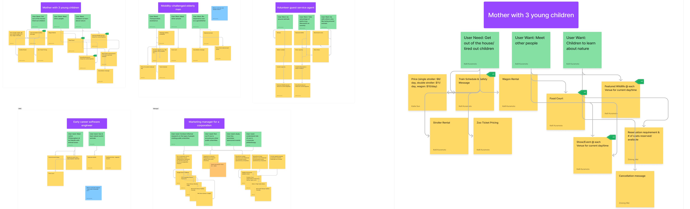
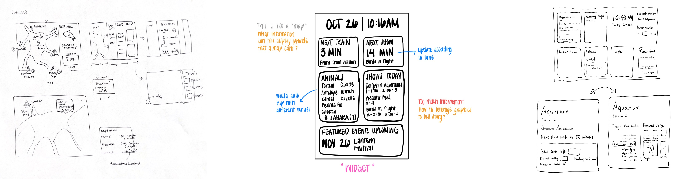
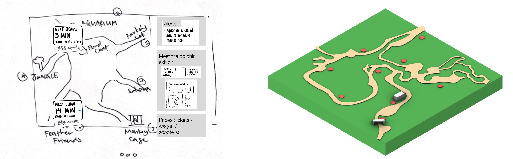
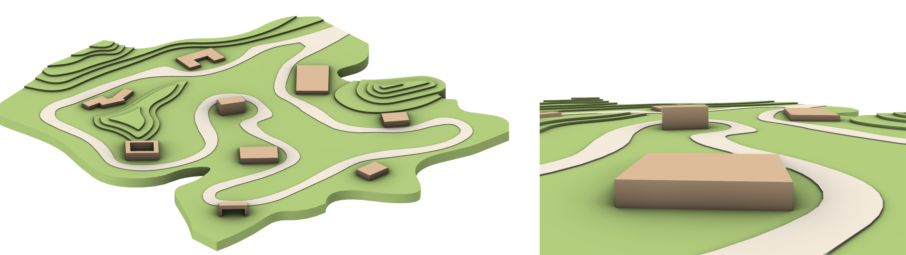
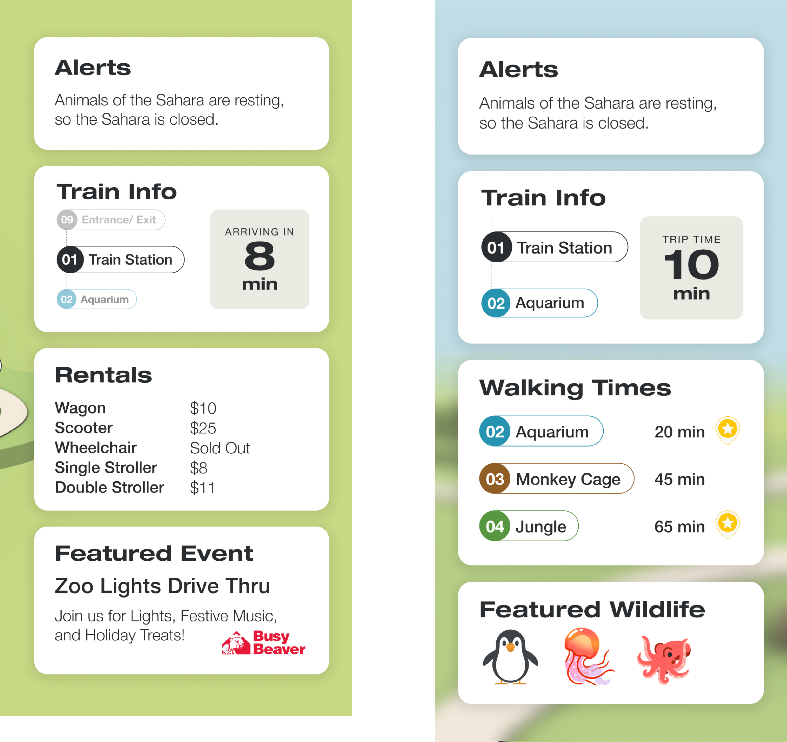
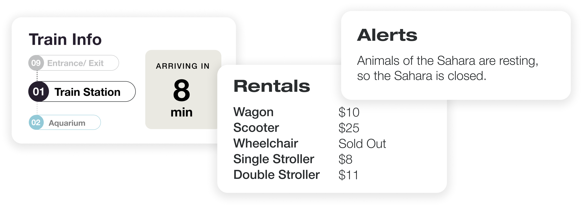
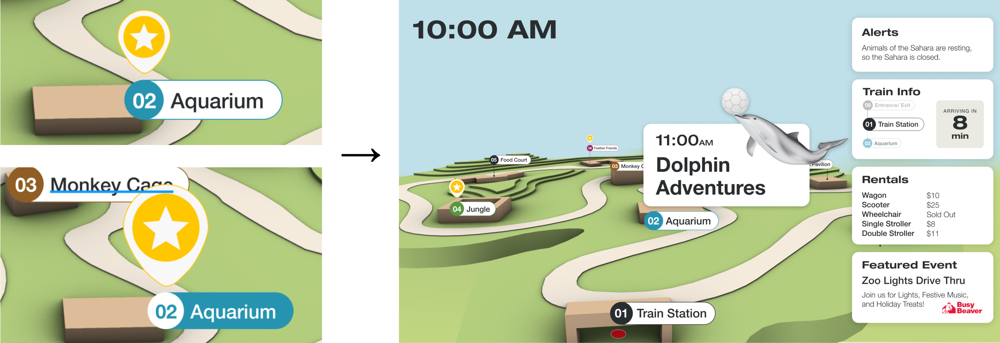

DATA DASHBOARD for the PITTSBURGH ZOO

Overview
As part of my Human-Computer Interaction studio class, our assignment was to create a data-driven display for the Pittsburgh Zoo & Aquarium, utilizing a given dataset. Within this project, my responsibilities included optimizing the alignment of the user interface elements and creating seamless animations to enhance the overall user experience of the dashboard.
Background
Team
- Katie Sun, Team member
- Jason Wei, Team member
The challenge
Create a data driven dashboard that meets the needs of the zoo-goers while simultaneously balancing business needs & constraints
Our solution
Provide high level overview of upcoming events
- Bird’s eye perspective increases engagement and exploration for all exhibits by showing exhibits with events
- 1st person perspective allows users to gauge distance of event and other exhibits to current location
Real time data and updates about upcoming events & capacity
- Reduce wait times at events by notifying visitors if current event is full
- Increase event engagement by providing next show times
Highlighted and updated important information for visitors
- Modules on the dashboard rotate between high-level information and Exhibit specific information
- High level (Bird’s eye view): Rental Information & Featured events
- Exhibit specific (1st person view): Train Info & Featured Wildlife
Uncovering user needs
Parsed research findings of 5 different personas using different modeling techniques to uncover insights

By modeling the data, we wanted to answer the fundamental question: Why do people visit the zoo?
We hypothesized that the answer to this question was essential to determining what information was relevant, as well as the most effective mode of delivery.
We identified 3 thematic insights across all 5 personas:
- To fulfill or develop an appreciation for nature and wildlife
- Foster a connection with fellow zoo-goers
- To explore new things
Parallel prototyping and experimentation
Parsed research findings of 5 different personas using different modeling techniques to uncover insights
We each sketched 2-4 dashboards in order to generate a wide range of ideas. Then, we came together and created a composite sketch, taking the most successful parts of each person’s drafts and identifying common components across all designs.  After we all agreed on the foundational components of our dashboard, we started to bring our sketches to life. A big design decision that we made was the addition of a 3rd dimension to our map. We noticed that many other groups in our class also had maps of the zoo and our group really wanted to push the bounds of our dashboard. 
Leaning into the 3rd dimension
Leveraged the characteristics of 3 dimensionality to provide 2 types of information: high level and exhibit specific
We wanted to make sure this inclusion was not merely aesthetic, but adding value to our design. We constantly asked ourselves: How is the third dimension of the map adding to the user’s experience?  We decided to implement an alternative grounded perspective for the more immediate, location-based information. We felt this view better immerses a visitor into the scene and allows them to orient themselves more accurately. 
Emphasizing temporality & information selection
Highlighted and updated information based on real time data and current events
We also considered how to differentiate our dashboard from a static map. Our answer: real-time data about the ongoings at the zoo.
When selecting information, our strategy focused heavily on temporality-- what did the user really need to know at a given time?

Using animation to engage visitors
Used animations to provide affordances of upcoming transitions, as well as perspective changes
In order to create the smoothest experience for our visitors, we were thoughtful in our use of animations to provide feedforward for viewers to hint at a screen change. Animations of the star popping up captures the users eye, which decreases the suddenness of the perspective changes from high level to exhibit level information. 
Final design
What I learned
I’ve created about a dozen or so hi-fi prototypes for various design classes, but I have never been quite as proud as I was when my team created this data-driven display. This project pushed my bounds of thinking in multiple ways and shaped me into a better design.
- Design materials aren’t always colors and shapes. This assignment has pushed the boundaries on my knowledge of what could be used as a “design material” to expand medium such as data and animation. Constantly pushing myself to ask questions like, what characteristics of data or capabilities of animation can I leverage to create the best experience for my users?
- There are no mistakes, especially when you're in school. At the begging of this unit, we notice most of our fellow classmates were utilizing a map for their dashboard. While ideating how to stand out, we realized none of them were leveraging natural mapping or 3 dimensional maps to enhance the user experience. By trying something completely new to all of us, we created a product we are proud of.